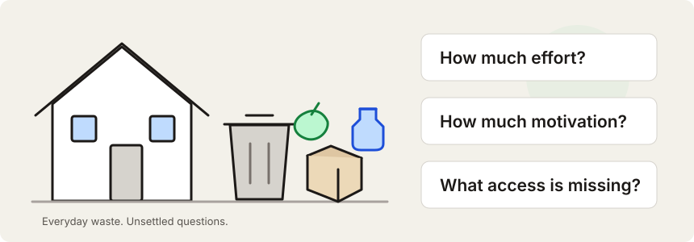
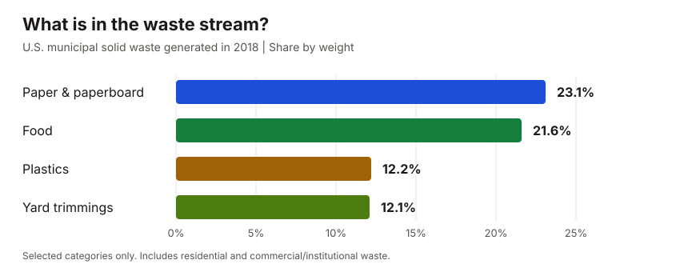

What does the future of household trash look like?
An open question, not a proposed solution.
Is the barrier effort, motivation, infrastructure, or some combination? Could AI, robotics, and vision help?

## TLDR
- The scale: 50% of U.S. municipal waste was landfilled in 2018. This includes residential and commercial/institutional waste, not households alone. [1]
- The climate impact: Food accounts for an estimated 58% of methane escaping U.S. municipal landfills. That is a modeled estimate, not a share of all U.S. methane. [2]
- The behavior question: A Northern Ireland study found confusion and competing priorities alongside environmental concern; it does not prove that most people do not care. [5]
- The technology question: AI sorting is deployed at industrial facilities, but that does not establish a reliable, affordable home sorter. [6] [7]
- Beyond the bin: Preventing wasted food can avoid production impacts that better disposal cannot fully offset. [4]
Still open: how much is effort, motivation, or infrastructure, and where could engineering actually help?
## the question
Household trash still involves deciding what goes where, storing it, and taking it out. How much of that friction could be engineered away? How much depends on habits, willingness, local collection rules, and whether recovered materials have somewhere to go?
The evidence below does not settle that question. National waste statistics, a study of recycling behavior, and industrial sorting deployments describe different parts of the problem; none alone establishes what would work in a home.
## data & research
How much waste, and where does it go?
EPA's national municipal solid waste figures cover 2018. They include residential and commercial/institutional waste: this is not a household-only dataset or a measurement of today's waste stream.
The remaining waste was managed through combustion with energy recovery or other food-management pathways. Tons here are U.S. short tons. [1]

View the chart data as a table
| Material | Share by weight |
|---|---|
| Paper & paperboard | 23.1% |
| Food | 21.6% |
| Plastics | 12.2% |
| Yard trimmings | 12.1% |
These are selected categories, not a complete breakdown. Material composition is not the same as recyclability or a potential household diversion rate; local acceptance and downstream processing matter.
Food waste has an outsized methane impact
Food accounts for about 24% of municipal waste landfilled by weight, but EPA estimates it produces 58% of fugitive methane emissions from U.S. municipal solid waste landfills. This is a modeled estimate, not a measurement of every landfill or a share of all U.S. methane. The report models emissions from 1990 to 2020. [2]
Measurements are a separate line of evidence. A 2024 study in Science used airborne imaging spectrometers across 18 U.S. states and detected significant methane point sources at 52% of surveyed landfills. The study concerns surveyed large landfills, not the fraction of emissions caused by food. It does not independently validate EPA's 58% food-specific model. [3]
Environmental impact is not just a bin problem. EPA's review of approximately 250 life-cycle analyses finds that preventing wasted food, donation, and upcycling can avoid additional food production; downstream treatment does much less to offset the impacts of producing that food. [4]
Is it inconvenience, or do people not care?
A 2022 PLOS ONE study used interviews with 18 adults and an online survey of 756 adults in Northern Ireland. It identified confusion about recyclable plastics, competing daily priorities, and expectations that government and manufacturers should make recycling easier. Environmental concern and inconsistent recycling behavior coexisted.
This convenience-sampled, regional study does not establish what most people worldwide think or prove that one barrier causes non-participation. It does suggest that “people don't care” and “it's only an efficiency problem” are both incomplete explanations. [5]
AI sorting exists — at facility scale
A 2025 IEEE Access review of industrial-grade waste classification notes that much prior computer-vision work uses controlled, simplified laboratory setups or other non-industrial scenarios. A model recognizing an item is not the same as a validated end-to-end sorting system. [6]
Fortune's June 2025 reporting describes AMP's deployed systems using cameras, AI, and air jets to identify and separate materials on processing lines. It reports an initial Waste Connections agreement for 24 robotic systems, expanded to include 50 facilities in 2022.
This is evidence of industrial deployment, not evidence of an affordable household sorter that reliably handles every mixed item. The article's recovery and cost-saving figures are attributed to AMP's founder, not presented as independent household trials. Identification also does not establish that an item will ultimately be recycled. [7]
## open questions
- Behavior: How much would participation change if sorting took less effort? What remains when access and confusing rules are accounted for?
- Where to sort: What are the environmental and economic trade-offs between sorting at home and recovering materials at a facility?
- AI & robotics: Can household-scale systems cope with dirty packaging, mixed materials, liquids, and unsafe objects at an acceptable cost?
- Actual outcomes: How should electricity, consumables, maintenance, collection, and the final destination of material be counted alongside convenience?
- Prevention: Could better household feedback reduce waste before it enters any bin, rather than only making disposal easier?
## current options & related systems
Examples, not recommendations or a proposed stack. Product capabilities below are manufacturer claims unless noted; they are not independent environmental comparisons. Listings checked . Prices and availability can change.
| Option | What it does | Listed cost / availability | Scope & limitations | Source |
|---|---|---|---|---|
| Mill Food Recycler | Processes food scraps into dried grounds; advertises 80% food-volume reduction. | From $999 on the homepage; promotions vary. | Food scraps, not mixed-trash sorting. Volume reduction alone does not establish landfill diversion; the grounds' destination matters. | Mill |
| Lomi 3 | Countertop food recycler with a 3L bucket; heats and grinds scraps. | $499 standalone, or $299 plus $120/year membership, on the sale listing. Listed as pre-order. | Food processing, not mixed-trash sorting. The manufacturer describes the output as pre-compost; filters and electricity are additional inputs. | Lomi 3 listing · Lomi |
| TOWNEW | Self-sealing and self-changing trash bags. | Retailer-dependent; no verified price quoted here. | Bag handling rather than material sorting. Uses refill rings. Linked site is a product roundup, not an independent performance study. | Product roundup |
| Laundry Jet | Vacuum-powered transport of clothing from room ports to a laundry room. | Installation quote required. | A related transport system, not a household trash product. Clothing transport does not demonstrate compatibility with mixed waste. | Laundry Jet |
| Envac | Pneumatic waste-collection infrastructure reference. | Project-specific; current details not verified. | Larger-scale infrastructure, not a countertop appliance. The linked site could not be retrieved during this check. | Envac |
| AMP | AI-based sorting at waste-processing facilities. | Facility-scale commercial systems. | Industrial deployment reported by Fortune; not a consumer home sorter. | Fortune reporting |
Local recycling and food-scrap collection, home composting, and ordinary bins are also relevant comparisons; availability, accepted materials, space, and costs depend on location. No appliance's volume-reduction claim should be read as a verified reduction in total household waste or emissions.